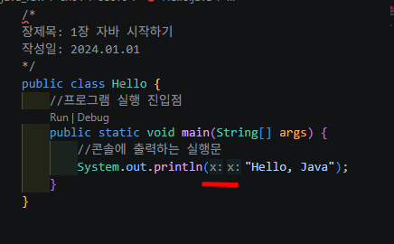

1. VSCode + Java
1.1 VSCode 폴더 위치에서 터미널 열기
VS Code 탐색기(Explorer) 에서 폴더 위치 기준으로 터미널 여는 방법은 이겁니다.
- 왼쪽 탐색기에서 원하는 폴더를 찾습니다.
- 예:
src > ch01 > sec08 sec08폴더 위에서 마우스 오른쪽 클릭- 통합 터미널에서 열기 또는 Open in Integrated Terminal 선택
그러면 VS Code 아래쪽 터미널이 열리고, 현재 위치가 바로 그 폴더가 됩니다.
/*
장제목: 1장 자바 시작하기
작성일: 2024.01.01
*/
public class Hello {
//프로그램 실행 진입점
public static void main(String[] args) {
//콘솔에 출력하는 실행문
System.out.println("Hello, Java");
}
}
실행방법
| 실행 결과 | 설명 |
|---|---|
|
[Hello 실행]
정상 실행되면 콘솔에 |
public class Calculator {
public static void main(String[] args) {
int x = 1; //변수 x를 선언하고 1을 저장
int y = 2; //변수 y를 선언하고 2를 저장
int result = x + y; //변수 result를 선언하고 x와 y를 더한 값을 저장
System.out.println(result); //모니터에 출력하는 메소드 호출
}
}실행방법
| 실행 결과 | 설명 |
|---|---|
|
[Calculator 실행]
정상 실행되면 |
1.2 inlay off

Ctrl + ,
inlay off